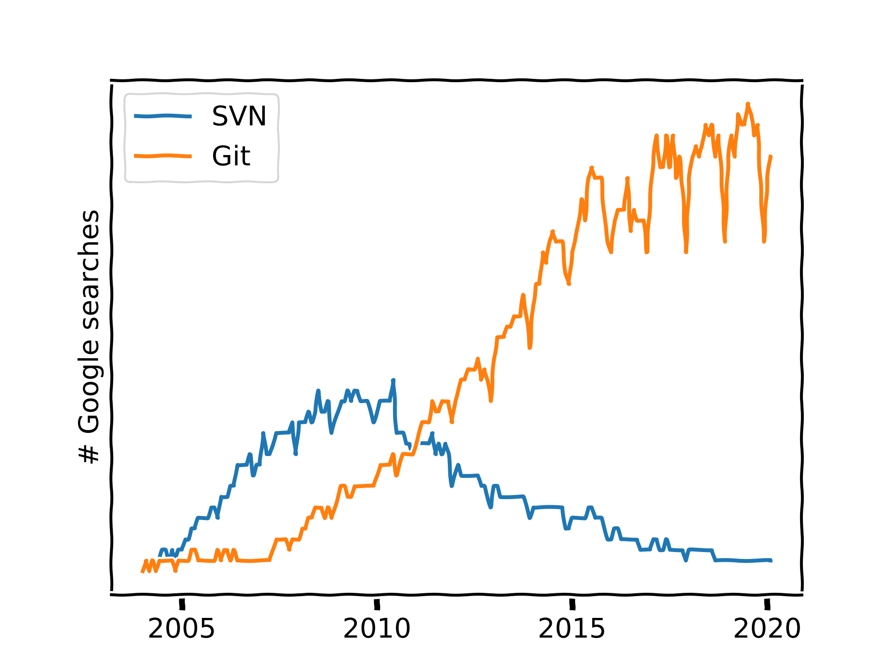

You Need Version Control
Arnaud Allera
↓ Slides are here ↓
“A post-mortem”
A study on colour discrimination in guppies
Let’s start !
- one folder
- one Excel
- one experiment
Analysis
- Statistic treatment is tedious
- Supervisor has a Matlab script !
And it works !
- Improves data analysis
- Huh, this variable’s effect looks funny 🤔
- From time to time, backups on an external HD
Meeting
- Figures with a R script “
script.r†- Presents the good results
- Supervisor wants to change a little bit the protocol 🧐
- Deadline !
New protocol
- Starts a new experiment
- Copies the matlab script (
matlab2.m) - Modifies figures (
script2.r)
New meeting
- Compares “
matlab.m†and “matlab2.m”" (just tweaked a little bit) - “
script-modifie.r”, “comparaison.r”, “matlab-modif.m”, “matlab2-modif.m”
- Several Excels
- 4 scripts
- Figures all around the place
- one PowerPoint
… victory !! 🤸
Redaction
- starts writing an article
- adapts the scripts to the article’s needs
- submits after a few months !
Wait a second…
Fail 🤯🤯🤯
matlab-Modi_Final2.mtakes colon N instead of N+1 🤯- since when ? 🤷
- all the analysis is nonsense, the siginficant effect is gone 🙊
- so is the article
- the experiment design has to be changed
What about us ?
This is fine
Files

Revisions

Conflicts
- GDrive / Dropbox : “Hey everybody, I’m going to work on the document, please wait until I’m done, Regards”
- GDoc / Sharepoint / Overleaf : “Who just broke the biblio ?”, edition war, internet connection, no ‘branches’
Dropbox
- snapshots : “Was X already added on Feb 4th 2018 ?”
- 150 modifications between two snapshots… 😬
Code
Okay, what do you propose ?
Introducing Git
Your project
- 1 folder = 1 project = 1 repo
- A series of events = an history
- “snapshots†= commits

- A graph, where live branches

- A decentralised system
- a well organised project = a collection of branches

Getting started
git initDo I need to use the terminal ?
Nope.
Sublime Merge Github Desktop Atom
XCode OverLeaf VS Code Matlab Spyder …
Uncle’ Joe said real devs’ use SVN

Git locally
- Stage changes
- Commit.
- Sometime, un-commit (“revert”)
Commit ?
git add example.txt
git commit --message "Added file: example.txt"Git online
- Every X commits, synchronise (fetch + merge + push)
git pull
git pushAnd that’s it ! Git will let you :
- automatically merge
- “revert”
- “blame”, “history”
To stay organised :
- commit messages
- branches
- Files naming
Demos
Create a project
- Locally create a repo
- Push it to git*.com
Clone a projet
- Get it from git*.com
Synchronise my work (commits)
Organise my work (branches)
Collaborate (merge requests)
Continuous integration (PreciSo)
In real life
Write an article
🤫 Any Overleaf project is actually a Git repo !
Do my experiment
What Git/Gitlab/Github do
- Keep a complete history of your project
- Allow merging versions and branches
- Follow your project’s development, archive it
What Git does not
- Manage your project and think for you 💁
- Merge of complex binary files (images, Photoshop, Word, videos,…)
- Do automatic commits every few minutes/hours
- Handle easily very large files collections (like 10k files)
- Handle very large files (use Git LFS for that)
Now, your turn !
Troubleshooting :